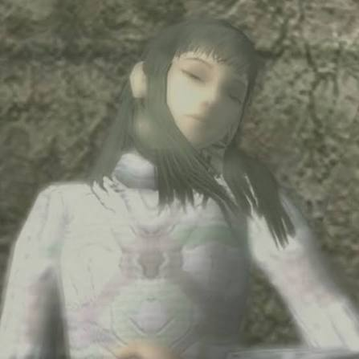
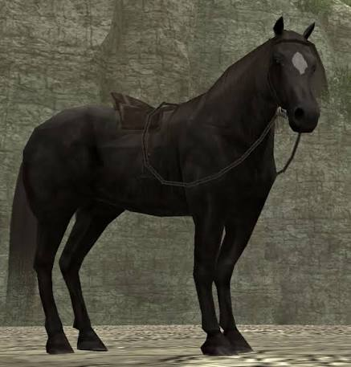

| Character name | who are they? | character image |
| Wander | The main protaganist of the game. We as the players, take control of his adventure in slaying the 16 beasts of the cursed land. |  |
| Mono | The Woman in which Wander seeks to bring back to life, Mono is stated to have been sacraficed by Wander's people in the story. |  |
| Agro | Agro is Our trusty steed throughout the entire game that takes us all over the map looking for each colossi. |  |